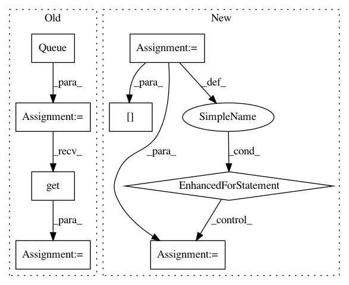

16474aee0c575e615c78d32f2a170c3d7f8f0082,autokeras/graph.py,Graph,produce_model,#Graph#,75
Before Change
output_id = self.node_to_id[self.model.outputs[0]]
id_to_tensor = {input_id: input_tensor}
q = Queue()
q.put(input_id)
while not q.empty():
u = q.get()
for v, edge_id in self.adj_list[u]:
layer = self.edge_list[edge_id]
if edge_id in self.old_edge_ids:
copied_layer = copy_layer(layer, get_int_tuple(id_to_tensor[u].shape))
temp_tensor = copied_layer(id_to_tensor[u])
else:
temp_tensor = layer(id_to_tensor[u])
id_to_tensor[v] = temp_tensor
q.put(v)
return Model(input_tensor, id_to_tensor[output_id])
def to_conv_wider_model(self, pre_layer, n_add):
output_id = self.node_to_id[pre_layer.output]
After Change
output_id = self.node_to_id[self.model.outputs[0]]
id_to_tensor = {input_id: input_tensor}
for v in self._topological_order():
for u, edge_id in self.reverse_adj_list[v]:
layer = self.edge_list[edge_id]
if isinstance(layer, WeightedAdd):
edge_input_tensor = list(map(lambda x: id_to_tensor[x], self.edge_id_to_input_ids[edge_id]))
else:
edge_input_tensor = id_to_tensor[u]
if edge_id in self.old_edge_ids:
new_layer = copy_layer(layer)
else:
new_layer = layer
temp_tensor = new_layer(edge_input_tensor)
id_to_tensor[v] = temp_tensor
return Model(input_tensor, id_to_tensor[output_id])
def to_conv_wider_model(self, pre_layer, n_add):
output_id = self.node_to_id[pre_layer.output]
In pattern: SUPERPATTERN
Frequency: 3
Non-data size: 8
Instances
Project Name: keras-team/autokeras
Commit Name: 16474aee0c575e615c78d32f2a170c3d7f8f0082
Time: 2017-12-30
Author: jhfjhfj1@gmail.com
File Name: autokeras/graph.py
Class Name: Graph
Method Name: produce_model
Project Name: tensorflow/benchmarks
Commit Name: 449e900ef018a775f2827dd3e591900c761004ab
Time: 2020-06-16
Author: 53017143+sganeshb@users.noreply.github.com
File Name: perfzero/lib/benchmark.py
Class Name: BenchmarkRunner
Method Name: run_benchmark